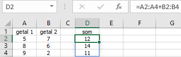
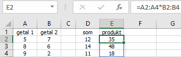

Taak: Eenvoudige matrixformules
In dit onderdeel leer je hoe je een eenvoudige matrixformule maakt.
Een matrixformule is een formule waarmee je berekeningen uitvoert op matrices. Het resultaat is ook weer een matrix. Om matrixformules te gebruiken moet je van tevoren bedenken hoeveel uitkomsten er zijn en hoe deze uitkomsten zijn gerangschikt (één cel, rij, kolom, tabel).
In de volgende afbeelding is te zien dat een paar keer de som en het produkt van twee getallen is berekend. Dat kan met eenvoudige gewone formules. Zo zou de formule in D2 kunnen zijn =A2+B2. En de formule in E2 zou kunnen zijn =A2*B2. Wanneer je dan deze formules naar beneden kopieert dan staan de juiste formules ook in D3:E4.
Deze berekening is ook met matrixformules uit te voeren. Het is een goede oefening om het gedrag van een matrixformule te leren kennen.
- Open het hulpbestand.
-
Selecteer cel D2 en typ in
=A2:A4+B2:B4 en druk op
ENTER.
Handiger dan het intypen van de celadressen is door deze met de muis te selecteren.
Omdat het resultaat van de optelling uit een kolommetje van drie getallen bestaat zal Excel het resultaat automatisch laten overlopen naar de cellen D3:D4. Je moet dat wel vooraf bedenken en zorgen dat deze cellen leeg zijn, anders volgt de foutmelding #OVERLOOP!.
Figuur 2. Som van twee kolommen via matrixformule De resultaten staan in de cellen D2:D4 en aan het kader om het resultaat kun je zien dat het een matrix is.
-
Selecteer cel E2 en typ in
=A2:A4*B2:B4 en druk nu op
ENTER.
Figuur 3. Product van twee kolommen via matrixformule De resultaten staan in de cellen E2:E4 en aan het kader om het resultaat kun je zien dat het een matrix is.
Voorbeeld: 1-dimensionale horizontale matrix
In dit voorbeeld wordt een rijtje van drie getallen vermenigvuldigd met het getal 4. Het resultaat bestaat uit een rijtje van drie getallen. Maak dit voorbeeld na.
Voorbeeld: 2-dimensionale matrix
In dit voorbeeld wordt een matrix van vier rijen en drie kolommen vermenigvuldigd met één kolom getallen. Het resultaat is een matrix van vier rijen en drie kolommen. Maak dit voorbeeld na.